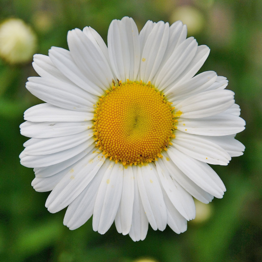

License¶

Vincent Mazet, “Basics of image processing” (formerly “Fundamental tools in image processing”), University of Strasbourg, 2021.
This work is licensed under a Creative Commons Attribution-NonCommercial 4.0 International License.
E-mail: vincent.mazet@unistra.fr.
Image credits¶

Aldrin © NASA, 2018. NASA content generally are not copyrighted. Original picture
Coins1 © Céline Meillier. Public domain.
Coins2 © Céline Meillier. Public domain.

Daisy © GLady. Free license. Original picture.
Peppers © Irene Kredenets on Unsplash. Free license. Original picture.

Simpsons1

Simpsons2

Spots © Vincent Mazet. Public domain.
{figure} ../figs/squirrel.png Squirrel © Vincent Mazet, 2020. Public domain.
UFO © Mete Eraydın. Creative Commons CC-BY. Original picture.